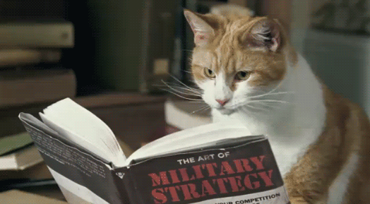

| Te traigo el pack de esenciales que diferencia a éstos últimos del resto. |
| 1. La sensación de felicidad al descubrir que el hostal donde te alojas tiene desayuno gratuito
Todos sabemos que una de las cosas más importantes en un viaje es la comida. La comida nueva que puedas encontrar es parte de la experiencia y la comida del hotel o del avión, incluso tus propios snaks para el camino, pueden determinar parte de tu experiencia. Por eso, cuando el hostal tiene comida gratis, es inevitable entusiasmarnos y querer probar de todo. Además, mucho o poco, significa algo más que te ahorras para utilizarlo en otra parte del viaje. 2. Prefieres dormir bajo las estrellas que en un hotel de 5 estrellas (aunque, de vez en cuando, algo de lujito no viene nada mal). En otros artículos ya he mencionado la importancia que tienen los cambios y las nuevas experiencias en los viajes, y es que salir de la ciudad es una de las principales razones por las que viajamos. Acampar en medio de la naturaleza donde la contaminación es mucho menor y poder ver las estrellas como nunca, es una de las experiencias que más valen la pena de viajar. 3. Tus lecturas favoritas son blogs, webs y libros de viaje.  Ya hay una sección en donde te muestro libros que te pueden servir para viajar. Leer es otro increible placer, pero incluso si no eres fan de los libros, seguro que alguna vez has entrado a blogs o páginas web como esta para encontrar toda clase de información sobre los viajes que quieres hacer. La variedad de cosas que puedes encontrar en internet o en libros es ilimitada. 4. Sacas tu carnet de estudiante cada vez que hay posibilidad de obtener un descuento. La verdad es que como viajeros siempre estamos buscando la forma de ahorrar un poco de dinero, y muchas veces recurrimos hasta a sacar el carnet y sabes que lo seguirás haciendo hasta los 50 años… porque siempre nos queda la universidad de la vida, ¿no? 5. El momento de furia total cuando, a punto de comprar tu billete de avión, la oferta ha caducado y el precio ha subido. Una vez más, buscando las formas de ahorrar. Que enojo cuando ilusionado estás por aprovechar un increíble precio y te dicen que la oferta ha caducado y tienes que pagar más de lo que tenías planeado. A veces hay que ocntrolarse para no gritar en pleno aeropuerto. 6. Aquel momento en que, a punto de perder el bus/tren/avión, te pegas un sprint que dejaría alucinado al mismísimo Usain Bolt. No hay nada peor que perderte tu gran viaje por no llegar a tiempo. A veces las prisas y la emoción por dejar todo listo para el viaje nos deja sin tiempo y terminamos corriendo como nunca para llegar a tiempo, con los ojos todo el tiempo clavados en el reloj. ¡Y que maravilla cuando por cosas del destino el transporte se ha retenido unos minutillos más! |
Los auxiliares de vuelo y los pilotos nunca reciben la misma comida que come usted. Comen una serie de platos totalmente distintos del menú para pasajeros para reducir el riesgo de intoxicación alimentaria en todo el avión. Pero no te pongas celoso. Mis compañeros de tripulación comieron sándwiches fríos y barras de chocolate.
Se considera un delito federal abrir y beber su propia bebida alcohólica en un avión, como te dirán los pilotos de Norwegian al comienzo de cualquier vuelo. De modo que mejor que guardes las bebidas libres de impuestos o todo lo que no te sirva un miembro de la tripulación.
Contrariamente a la creencia popular, la tripulación de cabina puede pasarte a los asientos prémium. Pero probablemente no haya suficiente espacio. Si la cabina delantera no está totalmente ocupada, los primeros asientos libres van primero a los empleados de la aerolínea, luego a los familiares y amigos del personal.
Sí, es cierto: hay un dormitorio secreto sobre la cocina donde los auxiliares de vuelo pueden echar una siesta. (La puerta es un discreto armario cerca de los retretes). Las literas son como nidos de plástico con camas de largo completo, sábanas, almohadas y cortinas de privacidad. Y los turnos de descanso están cuidadosamente programados.
|

T R A B A J A M O S P A R A Q U E L O S A M A N T E S D E L A A V E N T U R A |